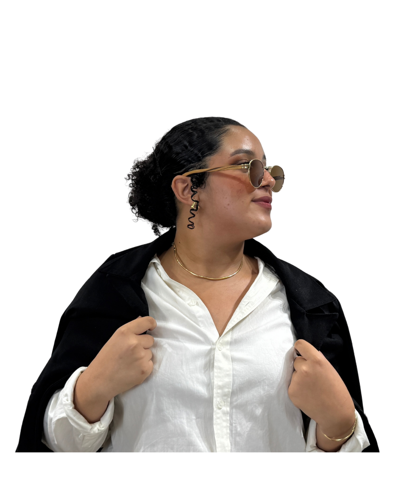

Transtorno do Espectro Autista (TEA)
O Transtorno do Espectro Autista (TEA) é uma condição do neurodesenvolvimento caracterizada por diferenças na comunicação, na interação social e por padrões de comportamento que podem incluir interesses específicos e repetitivos.
O termo “espectro” é utilizado justamente porque cada pessoa autista é única, apresentando características que variam em intensidade e forma.
Conheça mais
Compreender o autismo é reconhecer a diversidade e valorizar cada forma de ser. Reconhecer essas diferenças é essencial para promover inclusão e oportunidades iguais.
